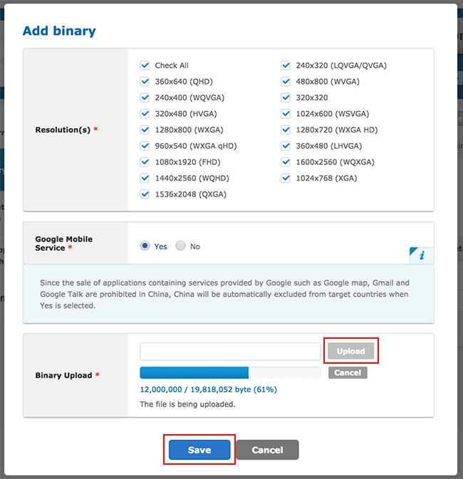
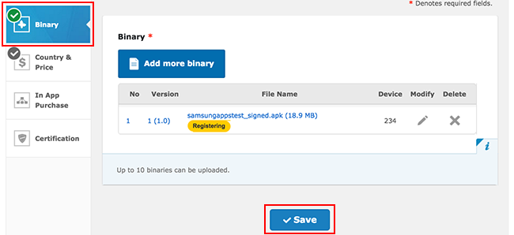

Samsung Galaxy IAP configuration
This guide describes the process of establishing the digital records and relationships necessary for a Unity app to interact with an in-app purchase store. The Unity IAP purchasing API is targeted.
In-app purchasing (IAP) is the process of transacting money for digital goods. A platform’s store allows the purchase of products, representing digital goods. These products have an identifier, typically of string datatype. Products have types to represent their durability: the most common are subscription (capable of being subscribed to), consumable (capable of being rebought), and non-consumable (capable of being bought once).
Cross-store implementation of in-app purchases
Note that there are cross-store installation issues when using shared Android bundle identifiers to publish to multiple Android in-app purchase stores (such as Samsung and Google) simultaneously. See documentation on Cross-store installation issues with Android in-app purchasing for more information.
Samsung Galaxy apps
Getting started
Write an app implementing Unity IAP. See Unity IAP initialization and Integrating Unity IAP with your app.
Keep the app’s product identifiers on-hand for use with the Samsung Apps Seller Office later.

- To set the IAP target store in the Unity Editor, go to Window > Unity IAP > Android > Target Samsung Galaxy Apps.

Alternatively, call the Editor API:
UnityPurchasingEditor.TargetAndroidStore(AndroidStore.SamsungApps
- Build a signed non-Development Build Android APK from your app. See documentation on Getting started with Android development to learn more.
Tip: Take special precautions to safely store your keystore file. The original keystore is always required to update a published application.
Register the application
Register the Android application with the Samsung Galaxy Apps Seller Office.
- Choose Add New Application.

- Choose the Android option and select a Default Language.

- To enable in-app purchasing, first register a binary APK. Go to In App Purchase and click GO.

In the App Store Developer Console, go to Binary and select Add binary.

Populate the device characteristics in Resolution(s) and Google Mobile Service, upload your APK (the one you created above in the "Getting Started" section) in Binary upload, then click Save.

Wait for the APK upload to complete, then click Save.

Add in-app purchases
In the Seller Office, add one or more in-app purchases for the app.
- Go to In App Purchase and choose Add Item.

- Define the Item ID. The Item ID here is the same identifier used in the app source code, added to the Unity IAP ConfigurationBuilder instance via
AddProduct()orAddProducts(). For debugging purposes, it's best practise to use reverse-DNS for your Item ID. Click Check to ensure the Item ID is valid and unique, then populate Item Type and all other elements and click Save.

- View the result in In App Purchase:

Testing an IAP implementation
The Samsung Galaxy App Store supports testing via the Developer mode value in the app before making purchases. This special build of the app connects with Samsung’s billing servers and performs fake purchases. This does not incur real-world monetary costs related to the product, and allows you to test the app’s purchasing logic.
Modify the app’s Unity IAP integration, adding the following line after creating the
ConfigurationBuilderinstance:builder.Configure<ISamsungAppsConfiguration>().SetMode(SamsungAppsMode.AlwaysSucceed); // TESTING: auto-approves all transactions by Samsung. You can also configure this to fail all transactions via theSamsungAppsMode.AlwaysFailenumeration, enabling you to test all your error code.Build and run the app, testing its in-app purchasing logic. As long as developer mode is implemented, this does not incur real-world monetary costs.

- IMPORTANT: When testing is complete, make sure you remove the
SetModeline. This ensures users pay real-world money when tha app is in use.